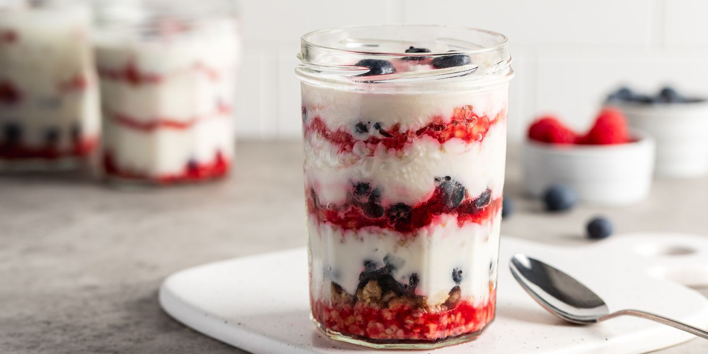

Parfait

Parfaits are made by boiling cream, egg, sugar, and syrup to create a custard like or meringue like puree, then is frozen.
This dessert translates to "perfect" and has become a layered dessert often served in a clear glass.
Ingredients
- 200g full fat yogurt of choice (¾ cup), chilled
- 240g heavy cream (1 cup), chilled
- 55g granulated sugar (¼ cup)
- 100g crushed vanilla biscuits, like Nilla wafers (1 cup)
- Optional: ½ teaspoon vanilla essence
Steps
- Mix the yogurt, cream and sugar (as well as vanilla if adding) in a large bowl. Use an electric mixer to whisk for 2-3 minutes until the sugar dissolves and the mixture becomes thick and fluffy (soft peak stage). Taste and adjust the amount of sugar if needed
- Crush the biscuits in another bowl
- Now take the serving dishes of your choice. You can use ~3 individual dessert cups or 1 small serving dish for this recipe
- First add a layer of the yogurt mixture. Then add a layer of the crushed biscuits, and repeat until the ingredients are used up. This recipe uses a generous amount of biscuits as they add beautiful flavor and texture
- Refrigerate for at least 4-5 hours, and preferably overnight. Decorate with chopped fruit of your choice, serve & enjoy!